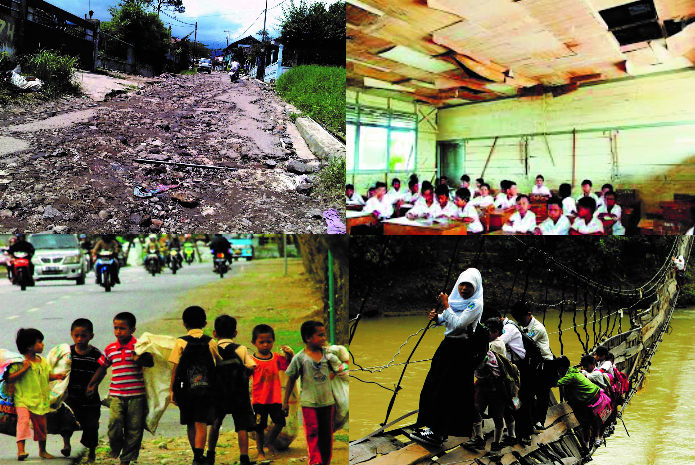

Kerja Praktek
Indonesia Corruption Watch
Created by Rizky Dwi Novyantika / rdnovyantika@gmail.com
Identitas
{kind=link}
Rizky Dwi Novyantika
Statistika, Universitas Islam Indonesia
Latar Belakang
{kind=link}
Latar Belakang

{kind=link}
Tujuan Kegiatan
Tujuan pelaksanaan Kerja Praktek di Indonesia Corruption Watch ini adalah :
- Dapat menerapkan ilmu statistika yang telah diperoleh dalam kehidupan secara nyata di lapangan atau dunia kerja
- Dapat mengetahui seberapa jauh manfaat maupun penerapan statistika dalam pengolahan data dalam bidang korupsi khususnya di Indonesia Corruption Watch
- Menambah wawasan dan memperluas pengetahuan khususnya dibidang penerapan statistika di Indonesia Corruption Watch
- Mengetahui variabel yang berpengaruh terhadap terjadinya korupsi dan bagaimana cara mengatasi jumlah korupsi yang meningkat
- Mengetahui lebih jauh dalam memasuki dunia kerja pada masa yang akan datang.
Manfaat Kegiatan
Bagi Mahasiswa
- Mahasiswa mendapatkan gambaran penerapan ilmu statistika di dunia nyata
- Mahasiswa dapat belajar menyesuaikan pembelajaran yang diperoleh dalam perkuliahan dengan di dunia nyata
- Mahasiswa dapat belajar analisis dengan data yang sebenarnya
- Menjalin hubungan mutualistis dengan pihak Indonesia Corruption Watch.
Bagi Indonesia Corruption Watch
- Sebagai sarana pengabdian masyarakat serta negara.
- Memperoleh masukan objektif yang dapat dipertanggungjawabkan secara akademis guna meningkatkan kualitas Indonesia Corruption Watch.
- Memperoleh sumber daya manusia sementara dengan kualifikasi yang sesuai dengan tuntutan di bidangnya.
Pelaksanaan Kegiatan
Waktu dan Tempat
Kerja Praktek ini direncanakan akan dilaksanakan selama satu bulan dimulai dari tanggal 16 Januari 2017 – 16 Februari 2017 bertempat di Indonesia Corruption Watch di Jl. Kalibata Timur IVD No.6, RT.10/RW.8, Kalibata, Pancoran, Kota Jakarta Selatan, Daerah Khusus Ibukota Jakarta 12740
Rencana Kegiatan
- Analisis pengetahuan korupsi sebagai pencegahan korupsi sejak usia dini
- Analisis persebaran tindak pidana korupsi di Indonesia
- Analisis jumlah kasus korupsi di masa yang akan mendatang
- Analisis peluang seseorang berpotensi korupsi berdasarkan suatu variabel
- Analisis hubungan antar variabel
{kind=link}
{kind=link}

{kind=link}